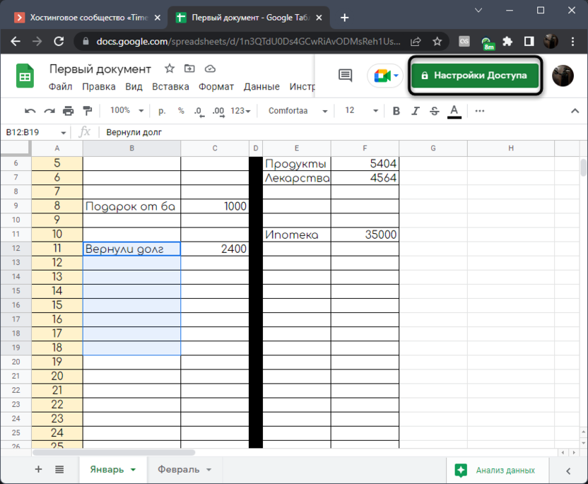
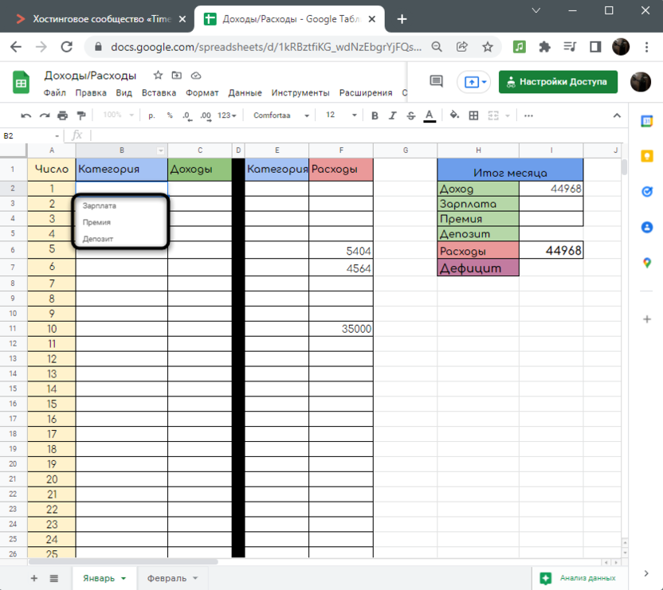
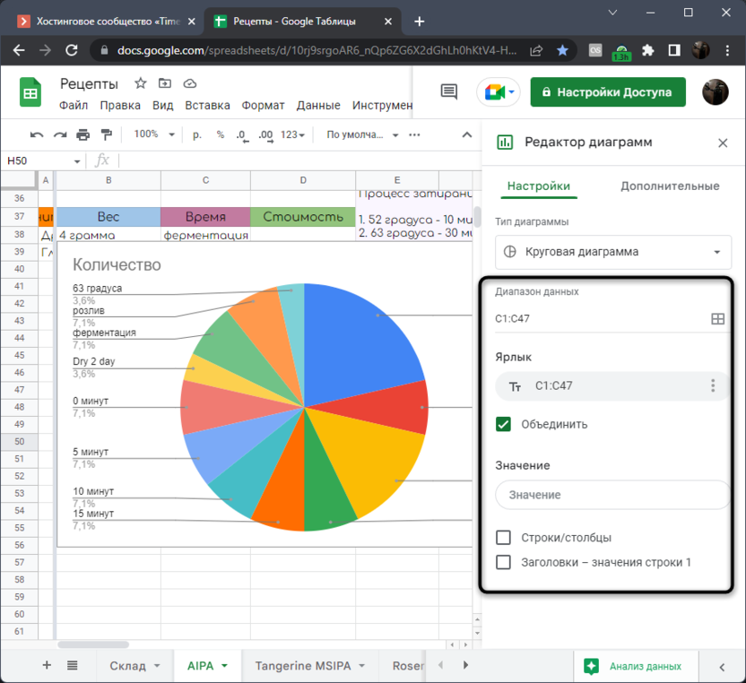

Google Таблицы для чайников: инструменты и возможности сервиса
Содержание:
- Как создать Google Таблицу
- Импорт файлов и данных
- Основные элементы панели инструментов
- Операции с ячейками
- Просмотр истории изменений ячейки
- Настройка общего доступа и защита листов
- Сортировка и фильтрация данных
- Создание раскрывающегося списка
- Полноценное формирование таблицы
- Создание диаграммы
- Закрепление столбцов и строк
- Работа со ссылками
- Удаление пустых столбцов, пробелов и дубликатов
- Конвертирование и отображение курсов валют
- Проверка электронных адресов
- Перевод текста
- Создание макроса с кнопкой
- Интеграция с другими сервисами Google
Google Sheets постепенно становится основным инструментом для проведения электронных расчетов и формирования таблиц, оставляя Microsoft Excel позади. Связано это как раз с простой возможностью организовать общий доступ, бесплатностью и отсутствием необходимости скачивать что-либо на свой компьютер. Принцип взаимодействия с данным онлайн-сервисом схож с любой программой для работы с электронными таблицами, но имеет свои особенности, о которых мы поговорим далее.
Ниже будет показана работа с Гугл Таблицами для чайников, а также разобраны основные функции сервиса. Это поможет вам понять, какие преимущества есть у этого средства перед десктопными программами и стоит ли обращать на него внимание конкретно в вашем случае. Однако перед началом хотелось бы выделить несколько плюсов тезисно:
- Онлайн-работа. Это самое большое преимущество, ведь вы без проблем сможете делиться ссылками на таблицы, предоставлять доступ к редактированию, защищать определенные диапазоны, отслеживать инструменты и делать все, чтобы командная работа с документами была максимально комфортной.
- Доступ к уникальным функциям. Почти все функции в таблицы Google имеют аналоги в Excel, однако некоторые являются особенными и предназначены для взаимодействия с онлайн-инструментами с обновлением в режиме реального времени, о чем мы еще поговорим далее.
- Интеграция с другими инструментами от Google. Это тоже будет разобрано в одном из разделов ниже, но важно понимать, что такая особенность позволяет без каких-либо сложных настроек объединить несколько разных сервисов, связать их и облегчить работу.
- Облачное хранение. Вам не нужно скачивать листы и таблицы на компьютер, все будет храниться на вашем облачном диске и в любой момент доступно для редактирования или экспорта в виде файла.
Одним словом, Гугл Таблицы – это крайне удобный онлайн-инструмент, повторяющий функциональность программ для работы с электронными таблицами и способный заменить их, предоставляя доступ к уникальным возможностям. Теперь остановимся более детально на каждом из основных аспектов работы с данным сервисом.
Как создать Google Таблицу
Если вы еще ни разу не работали в электронных таблицах от Google, первоочередная задача будет заключаться именно в открытии сайта и создания пустой книги. Давайте разберемся с тем, как создать Гугл Таблицу пошагово. В этой задаче нет ничего сложного, ведь вам только понадобится аккаунт для авторизации и синхронизации документов. Перейдите на официальный сайт Google Sheets и нажмите кнопку для перехода непосредственно к листам.
Если у вас еще нет своего профиля в Гугл, разработчики предложат создать его, поскольку без этого не получится работать со всеми инструментами и сохранять изменения в облаке. Для этого нажмите на специально отведенную на странице кнопку и следуйте инструкциям от разработчиков.
После авторизации вас встречает основное окно управления документами, в котором уже показаны созданные таблицы, шаблоны и кнопка для добавления пустого файла. Вы даже найдете средство сортировки, чтобы узнать, когда и с какими таблицами вы взаимодействовали на этом аккаунте.
Можете создать пустую книгу или ознакомиться с полным перечнем шаблонов, что тоже поможет более детально изучить функциональность сайта и узнать, как разработчики подошли к реализации тех или иных задач как в техническом, так и визуальном плане.
Импорт файлов и данных
Давайте сразу разберемся с поддержкой электронных таблиц, созданных в других программах и хранящихся в виде файлов на вашем компьютере. Непосредственно на странице создания нового файла можете нажать на кнопку с папкой, чтобы перейти к загрузке существующего документа. Если уже открыли пустой лист Google Sheet, тогда разверните меню «Файл» и выберите пункт «Импорт». Вы можете добавить файлы формата XLSX и ODS.
Они будут загружены с сохранением всех функций и визуального форматирования, что позволит приступить к работе с электронной таблицей в том виде, в котором подразумевал создатель. Об этом рассказано в другой моей статье, где помимо метода импорта всего файла рассмотрена возможность добавления исключительно определенных диапазонов с других документов, созданных в Google Таблицах.
Они будут загружены с сохранением всех функций и визуального форматирования, что позволит приступить к работе с электронной таблицей в том виде, в котором подразумевал создатель. Об этом рассказано в другой моей статье, где помимо метода импорта всего файла рассмотрена возможность добавления исключительно определенных диапазонов с других документов, созданных в Google Таблицах.
Основные элементы панели инструментов
Теперь давайте разберемся с тем, как редактировать Гугл Таблицы. Осуществляется это при помощи инструментов на верхней панели. Они практически точно повторяют те, что присутствуют в том же Excel и других текстовых редакторах, но имеют и свои особенности. Сначала я бы рекомендовал посмотреть на каждое выпадающее меню, кликнув поочередно по их названиям на панели сверху. Понятно, что при помощи раздела «Файл» осуществляется работа с самим документом, создание, распространение и экспорт. Основное внимание обратите на вкладки «Вставка» и «Данные». Там находятся кнопки, отвечающие за выполнение основных действий. С их помощью вставляются диаграммы, рисунки, дополнительные ячейки, осуществляется управление проверкой данных, их очистка и фильтрация. Об этом более детально еще пойдет речь ниже.
Панель под выпадающими меню полностью отведена для кнопок с визуальной работой. Вы можете менять масштаб, выбирать новые шрифты, добавлять знаки после запятой, проценты, форматировать текст, его цвет и вставлять ссылки. Все это наверняка знакомо вам, если ранее вы сталкивались с Microsoft Excel или хотя бы взаимодействовали с документами в одном из текстовых редакторов.
Останавливаться на каждой кнопке не будем, поскольку вы можете сами проверить их действия в тестовой таблице или просто навести курсор, чтобы прочитать описание от разработчиков и понять, для чего предназначен тот или иной инструмент.
Операции с ячейками
Таблица Google в первую очередь предназначена для расчетов, ведения бухгалтерии и выполнения прочих задач, связанных с математикой и данными. Основная работа в этом случае происходит с ячейками, которые и хранят значения данных. Они являются главной частью документа и нужны для применения функций, дальнейшего формирования полной таблицы и диаграмм по ним. Вы можете выбрать любую пустую ячейку и создать на ней формулу, напечатав знак = и первый символ функции после него. Появится меню с подходящими результатами. Большинство популярных функций имеют свое описание, чтобы вы понимали предназначение и синтаксис.
Простые математические операции часто выполняются вовсе без дополнительных функций. Вам нужно лишь объявить само действие знаком =, после чего указать номера участвующих ячеек и операцию между ними. Это может быть сложение, умножение, деление, вычитание, работа с процентами, определение долей и прочее.
К сожалению, объема одной общей статьи не хватит, чтобы описать даже основные функции Гугл Таблиц, а также рассказать о том, какой синтаксис имеет каждая из них. Вместо этого я бы посоветовал перейти на страницу поддержки Google, чтобы получить доступ к справке со всеми функциями, детальным описанием и возможностью фильтрации по разным параметрам.
В разделах ниже еще будут представлены инструкции по использованию популярных функций, поэтому можете продолжить читать инструкцию, чтобы разобраться с некоторыми из них и применить в своих целях.
Просмотр истории изменений ячейки
Давайте рассмотрим следующую особенность Гугл Таблиц. Это будет средство просмотра внесенных изменений, что ценится не только при единоличном редактировании документа, но и во время общей работы, чтобы понимать, кто из пользователей и когда что-либо менял в одной определенной или разных ячейках. Для этого вы можете открыть меню просмотра истории версий или выбрать конкретную ячейку, чтобы отследить изменения только в ней.
У этого инструмента есть только один минус – слишком долгая обработка информации в таблице с большим количеством данных. Окно истории версий может даже зависнуть на некоторое время. Однако этот недостаток проявляется далеко не всегда и не является критичным. В большинстве случаев средство слежения за изменениями оказывается крайне полезным и эффективным.
Настройка общего доступа и защита листов
Только что уже была упомянута совместная работа в Google Sheets, поэтому давайте остановимся на этом средстве более детально. На сайте вы можете предоставить доступ другим пользователям к своей таблице. Вы самостоятельно выбираете, кто сможет переходить и просматривать документ, комментировать его или редактировать. При этом доступ предоставляется всем, у кого есть ссылка, или только определенному списку юзеров, создаваемому путем указания адресов электронной почты. Перейдите по ссылке ниже, чтобы детально ознакомиться с тем, как настроить общий доступ конкретно в вашей ситуации. В этой же статье рассказано о том, как защитить лист или диапазон от редактирования в случае коллективной работы.
Сортировка и фильтрация данных
Рассмотрим следующую полезную функцию, которая пригодится как тем, кто создает таблицу в Google, так и тем, кто только просматривает уже существующие документы. Сортировка и фильтрация позволит отобразить на экране только необходимые значения, убрав из вида остальную часть электронной таблицы. Если сортировка чаще осуществляется только по алфавиту, то вот фильтры могут быть самыми разными. Для них даже есть отдельная настройка, где каждый пользователь сам задает подходящие параметры.
Создание раскрывающегося списка
Логичным будет поговорить и о раскрывающихся списках, поскольку они тоже выступают в роли своеобразного оптимизатора таблицы, позволяя отобразить только то, что нужно именно сейчас. Такие списки корректно подставляются под формулы, которые динамически изменяются в зависимости от выбранного значения. Еще они могут быть использованы в сводных таблицах. Создание такого перечня не является чем-то сложным, нужно лишь настроить проверку данных и задать необходимое количество значений.
Полноценное формирование таблицы
Выше вы узнали о нескольких самых разных функциях и настройках, которые предоставляют Гугл Таблицы. Обучение на этом не заканчивается и часто пользователь заинтересован в создании полноценной таблицы со всеми визуальными оформлениями. Вы уже знаете о панели инструментов, можете взаимодействовать с ячейками, создавать списки и проверять данные. Теперь все зависит непосредственно от того, какого типа таблицу вы хотите получить.
В ней рассказано о ссылках между разными листами, условном форматировании и различных функциях. Можете использовать эту инструкцию, чтобы узнать что-то новое о возможностях Google Sheets и получить некоторые дополнительные знания, которые помогут во время дальнейшей работы с таблицами других типов.
Создание диаграммы
Если у вас уже есть готовая таблица, можно сформировать диаграмму, которая будет наглядно показывать результаты, пропорции или количество значений в ячейках именно визуально, что значительно упрощает восприятие содержимого. Давайте разберемся с тем, как создать самую простую диаграмму с подходящими для вас настройками.
-
Сначала разверните меню «Вставка» и выберите в нем пункт «Диаграмма».
- Она будет автоматически вставлена в соответствии с тем, какая таблица у вас создана. Если на листе их несколько, сначала выделите требуемый диапазон и только после этого создавайте диаграмму. Можете изменить ее тип, развернув для этого список со всеми доступными вариантами.
-
Ниже есть пункты для изменения диапазона и значений, что поможет вам оптимизировать отображаемые элементы, если случайно были захвачены лишние или замечены недостающие.
 -
Сама диаграмма отображается в виде отдельного блока в таблице. Вы можете зажать ее левой кнопкой мыши, чтобы перенести в любую удобную позицию, а также использовать точки по краям для масштабирования.
-
Откройте вкладку «Дополнительные» для изменения внешнего вида диаграммы. Задайте для нее фон, цвет границ и шрифт.
-
Чуть ниже можете развернуть блок с названием, задать новый заголовок, цвет текста и другие параметры.
Настройка диаграммы зависит непосредственно от того, какую цель вы преследуете. Возможно, нужно показать статистические данные или визуальные результаты вычислений. Это же применяется и для сводных таблиц. Отмечу, что разработчики используют технологию интуитивного анализа данных, в которую входит и автоматическое создание различных вспомогательных графиков, основанных на самой таблице.
Закрепление столбцов и строк
Хочу рассказать о небольшой функции, которая позволяет закрепить строку или столбцы, чтобы они всегда оставались на видном месте при прокручивании таблицы. Это нужно тем пользователям, кто занимается чтением данных в большом документе и не хочет упускать из виду оглавление, чтобы не потеряться в названиях строк и столбцов. Понадобится только открыть меню «Вид» и выбрать подходящий для вас вариант закрепления.
Работа со ссылками
Создание из текста ссылки в Google Таблицах – одна из самых простых задач, выполняющаяся кликом по одной кнопке, которая расположена на уже упомянутой панели с основными инструментами. Поэтому я предлагаю сразу перейти к более сложному процессу – объединению нескольких ссылок. Например, у вас есть один основной домен и несколько разных страниц, на которые нужно организовать переход. При помощи отдельной функции можно сцепить адреса, создав одну строку для перехода на страницу. Далее эту формулу можно растянуть на всю таблицу, потратив минимальное количество времени на создание ссылки на несколько разных страниц с одним основным доменом.
Удаление пустых столбцов, пробелов и дубликатов
Во время работы над электронной таблицей наверняка возникнет такая ситуация, когда на экране будет отображаться большое количество строк или среди значений присутствовать ненужные дубликаты, в том числе и пробелы. Их удаление позволит вам не только нормализовать внешний вид документа, но и ускорить его загрузку. Строки и столбцы удаляются через контекстное меню
Конвертирование и отображение курсов валют
Продолжаем разбираться с тем, как работать в Гугл Таблицах на компьютере. Следующая тема, о которой я хотел бы рассказать, подойдет всем тем, кто выполняет различные финансовые операции в данном онлайн-сервисе и ведет отчетность. При помощи простых функций можно загружать текущие курсы валют и конвертировать их в указанные, для чего понадобится создать небольшую формулу.
Проверка электронных адресов
Предлагаю немного отдалиться от темы финансов и чисел и разобраться с тем, для каких еще целей можно использовать Google Таблицы, ведь это не только средство для математических расчетов. При помощи таких документов вы можете собирать статистику, вести учет пользовательских данных и проверять их правильность. В частности, относится это и к электронным адресам, для чего сайт предлагает специальную функцию, которая в автоматическом режиме проверит валидность указанного email.

Перевод текста
Еще одно средство работы с текстовыми данными – перевод на другие языки. Для этого Google предлагает использовать собственную функцию, которая интегрирована с фирменным переводчиком. Вам только нужно выбрать, с какого на какой язык осуществлять перевод, используя для этого кодовые обозначения каждого. В целом, формула не является сложной и какой-то специфической.
Создание макроса с кнопкой
Начинающим может показаться, что работа с макросами и разными командами в Google Таблицах такая же сложная, как в том же Excel, однако это не так. Запись действий и их дальнейшее автоматическое выполнение не является чем-то затруднительным в плане реализации. К тому же созданный макрос даже можно назначить на визуальную кнопку, чтобы постоянно не вызывать меню для его запуска.
Интеграция с другими сервисами Google
Вы уже узнали, что при помощи простых функций осуществляется обращение к другим инструментам Google для конвертирования курсов валют и перевода текста. Однако это далеко не все, что можно выполнять в Гугл Таблицах. Доступна интеграция и с другими популярными сервисами, куда входят и Формы. Вы можете собирать через них данные о пользователях, затем автоматически выводить их в таблицу, формировать сводки или графики в соответствии с предоставленными ответами. Настройка в этом случае осуществляется при помощи специально отведенного инструмента импорта.
Далее идут задачи и напоминания, которые тоже могут быть частью электронной таблицы, если вы используете ее как ежедневник или календарь. Достаточно просто связать учетную запись Google с календарем или заметками, чтобы добавить необходимое количество записей. Вы будете получать уведомления и всегда сможете перейти к просмотру сохраненных записей через кнопки на боковой панели, отвечающие за открытие этих самых дополнений.